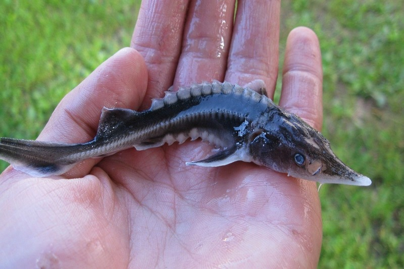
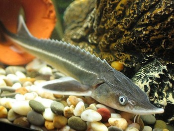

Вид осетровых рыб – стерлядь (Acipenser ruthenus), в последние годы вызывает опасения. Из-за агрессивности природных врагов у популяции не так много. Еще 70 лет назад подвид был многочисленным. Негативная тенденция отмечается только последние десятилетия. Главная причина – загрязнение окружающей среды, в частности, водоемов.
Вид осетровых рыб – стерлядь (Acipenser ruthenus), в последние годы вызывает опасения. Из-за агрессивности природных врагов у популяции не так много. Еще 70 лет назад подвид был многочисленным. Негативная тенденция отмечается только последние десятилетия. Главная причина – загрязнение окружающей среды, в частности, водоемов.

Отряд рыб, к которым относится стерлядь, осетрообразные. Как любой хищник отряда, рыба – крупная и тяжелая. Популяция относится к хрящекостным видам. Чешуя напоминает костяные пластинки. Хищная особь имеет плотное покрытие, которое защищает ее от нападений.
Несмотря на внушительные размеры, Acipenser ruthenus считается самым мелким из осетровых. Калуга опережает сородича в несколько десятков килограмм. Средний вес взрослой особи составляет около 2-4 кг. Размер хищника зависит от места обитания и обилия пищи.
Средняя длина тела варьируется от 120 до 130 см. Мелкие особи также встречаются, особенно в мелководье – их длина составляет около 40 см. Тело удлиненное, но с равномерной массой. Голова имеет треугольную форму, она крупная.
Морда вытянутая, немного плоская. Нижняя губа условно разделена на 2 части – так рыбу отличают от подобных по внешнему виду. Усики небольшие, внешне напоминают неравномерную бахрому. Усики расположены на нижней части.
На голове Acipenser ruthenus есть своеобразные щитки. Основной плавник, в отличие от сородичей, расположен ближе к хвосту, что считается особенностью вида. Хвост имеет типичную форму, верхняя лопасть длиннее, чем нижняя.
Окрас обычно темно-серый. Иногда встречаются бурые или желтые оттенки. Живот всегда светлее основного окраса. Цвет икры такой же, как и у других осетровых – черный.
 Хищник подстраивается под добычу. Летом он обитает в мелководье. Молодняк выбирает узкие протоки. Ближе к осени популяция перебирается на более глубокие воды, где больше мелкой рыбешки. Зимует Acipenser ruthenus в своеобразных ямах, где подходящая температура воды.
Рацион популяции состоит из мелких беспозвоночных. Насекомые и рачки позволяют находить пропитание даже зимой. Рыба поедает моллюсков, которые обитают на дне.
В крайних случаях хищник может питаться чужой икрой. Acipenser ruthenus редко становится добычей – на ее вылов тратится очень много времени.